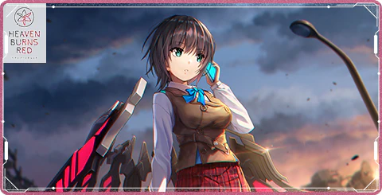
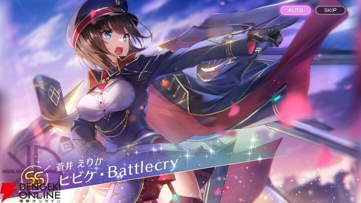
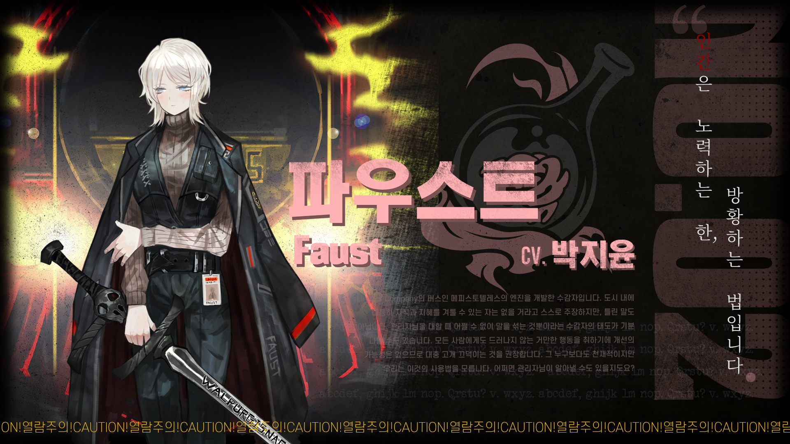
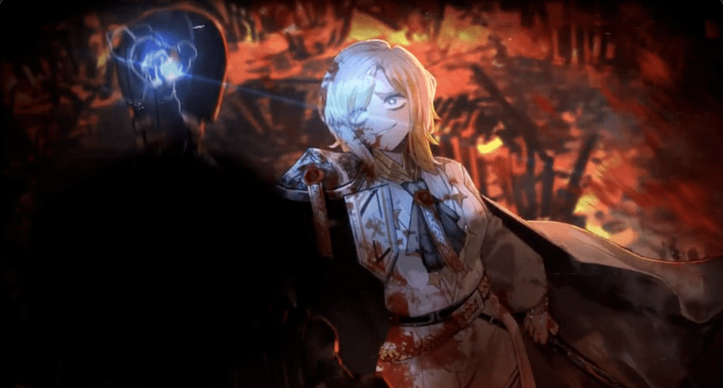
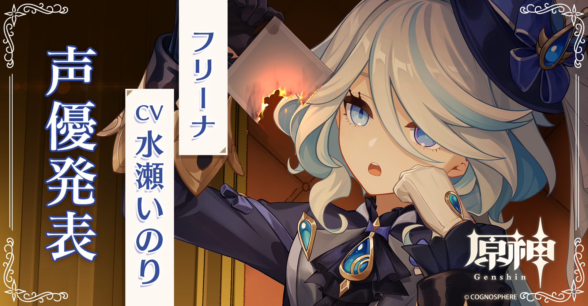
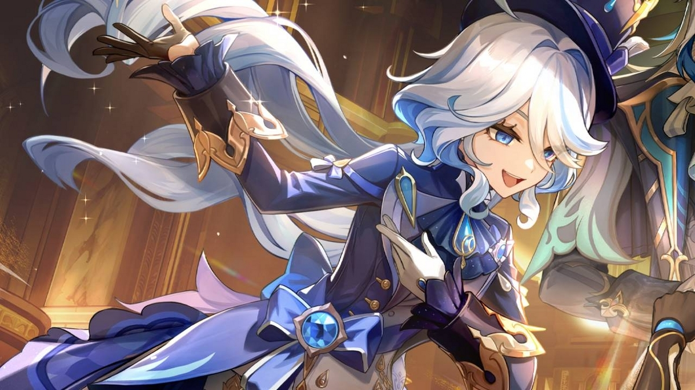
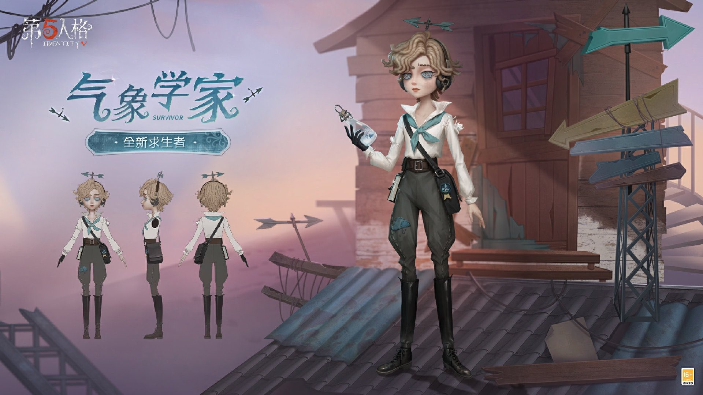
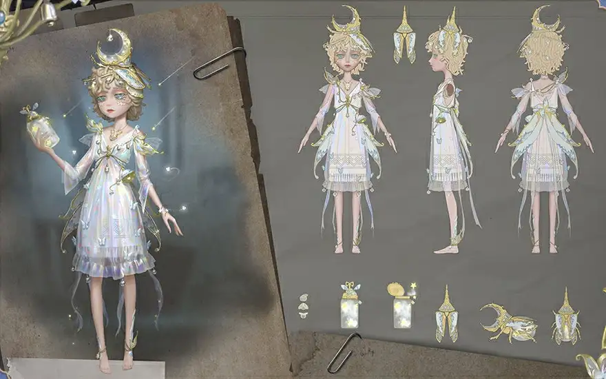

-
 
-
 
-
 
-
 
蒼井えりか
ヘブンバーンズレッド第31B部隊、部隊長”蒼井えりか”
彼女は冷静沈着で、仲間思いの優しい性格をしています。
少し天然なところもありますが、部隊のために全力で戦う姿勢が魅力的です。
少しややこしいことが起きるとポカーンということがあります。すごく可愛い。
ファウスト
Limbus Company,LCB囚人番号2番”ファウスト”
ファウストは冷静沈着で、知的なキャラクターです。
謎多きキャラで神秘的かつそれとなく傲慢な態度が特徴です。
過去作の誰かさんに似ていると言われることもあります。
フリーナ
原神５つ目の国フォンテーヌの神”フリーナ”
尊大で芝居がかった態度など、中性的な容姿・言動が目立つ美少女。
ですが彼女は冷静沈着を装ったポンコツで可愛いです。
個人的にすきだから２凸までしてます。
ウェンディ・フート
第五人格サバイバー、気象学者”ウェンディ・フート”
能力は空を飛んだり、風でハンターを押し出したり、回復できたりとかなり器用なキャラで愛用しています。
一時期Bバッチ圏内まで使い込んでいたが惜しくも取れずにいた。